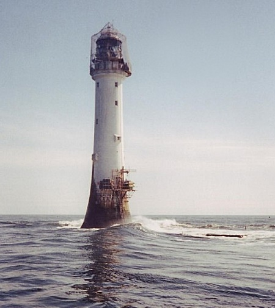

Design of distance sampling surveys
Systematic parallel line aerial survey of marine mammals in St Andrews Bay
Reviewing the data
 Open the project archived in StAndrews.zip. This project contains the survey region for an aerial survey of porpoise, common dolphins and seals in and around St Andrews bay. (For locals: the nearer St Andrews bay region has been extended in an easterly direction out past Bell Rock, as there are some pockets of deeper water out there that are of interest with regard to the distribution of cetaceans. The survey region has a chunk missing due to a no-fly zone around Buddo Ness, just below Carnoustie). To take a look at the survey region create a new map in the Maps tab and add the layer StAndrews to the map.
The small survey plane permits a total flight time of approximately 250 km (excluding the flight time to and from the landing strip in Fife Ness, just down the coast). A systematic line sampling design is going to be used. The design should maximise the amount of on effort surveying time whilst ensuring that the constraint of 250 km total effort (including off effort transit time between sampler lines) is achieved. The aim of this exercise, therefore, is to decide on a systematic line spacing that gives about 200 km on-effort trackline with the total trackline length constrained to 250 km. To do this create a number of systematic line sampling designs with different line spacings, generate the design statistics for these designs and then the statistics for the total trackline length to the on-effort trackline length for different designs.
Before proceeding to the design stage you need to generate a coverage grid layer, as this will be needed to generate design statistics.
Generate a coverage grid layer
To generate a coverage grid layer click on the Data tab of the Project Browser and then the Create New Data Layer button (5th from left). Enter “Grid5” as your Layer Name and set the Parent Layer to “StAndrews” and the Layer Type to “Coverage”. You should now be able to click on the Properties… button. In the Grid Properties that pops up set the “Distance between grid points” to 5 and the “Units of distance” to “Kilometre”. (This is too far apart for estimating probabiltiy of coverage, but we know coverage is even for this design, so choosing a wide spacing makes the simulations run faster.) Once you press OK you should proceed to add the grid points to the layer. This may take a few moments.
Now create and generate a couple of designs with a spacing of your choice (some suggested spacings include 4.5, 5, 5.5 and 6 km)
Creating a new design
Click on the Designs tab of the Project Browser and then the New Design button. Rename your “New Design” something like “systematic line test” and then click the Show Details button to open the Design Details window. Select the “Line” sampler and set the design class to “Systematic Random Sampling”. Click the Properties button to set the following properties for this design:
- On the General Properties tab under Stratum layer, the StAndrews stratum layer should be selected. Under Design coordinate system, the design coordinate system should be “Non-earth referenced”. (The data have already been projected from the OSGB 1936 geo-coordinate system using the transverse mercator projection)
- In the Effort Allocation tab, under Edge Sampling select the “Minus” option. In the “Allocation by stratum” section set the Line length units to be Kilometres. Make sure the “Update effort in real time” check box is ticked. As there is only one survey stratum it does not matter whether the “Same effort for all strata” check box is ticked or not. Click the “Systematic line spacing” radio button and enter the line spacing in the “Spacing” column of the table. When you enter a 5 km spacing for instance the “Length” column should then read 226.203 and the “Samplers” column 8. The accuracy of this approximation of on-effort line length and total number of line samplers depends on the shape of the survey region, but should at least give you some indication of what to expect.
- In the Sampler tab, select Kilometre for the line sampler width units. Set the truncation width to 2 km.
- Lastly, in the Coverage Probability tab, click on “Estimate by simulation” and enter 100 as the number of simulations. This is too few to give accurate coverage probabilities, but sufficient for the on-effort and total trackline length statistics. Under grid layer, choose previously created “Grid 5”. Make sure the Grid field name is the same as your design name.
Click OK to close the Design Properties window and return to the design details.
Design statistics
For each design run Distance generates multiple simulated surveys and uses these to work out the statistics for on-effort and total trackline length. Run your designs and in the Design Details Results tab that opens review the statistics to decide on suitable systematic line spacing.
Automated generation of new surveys
To see an example survey, go back to the Design Details window for your selected design click Run again this time choosing the “Generate a new Survey” option. The second page of the survey results displays a map of the survey region with the systematic lines superimposed. You can add this map to the Map browser and manipulate it there by clicking on the 6th button on the Survey map results page.